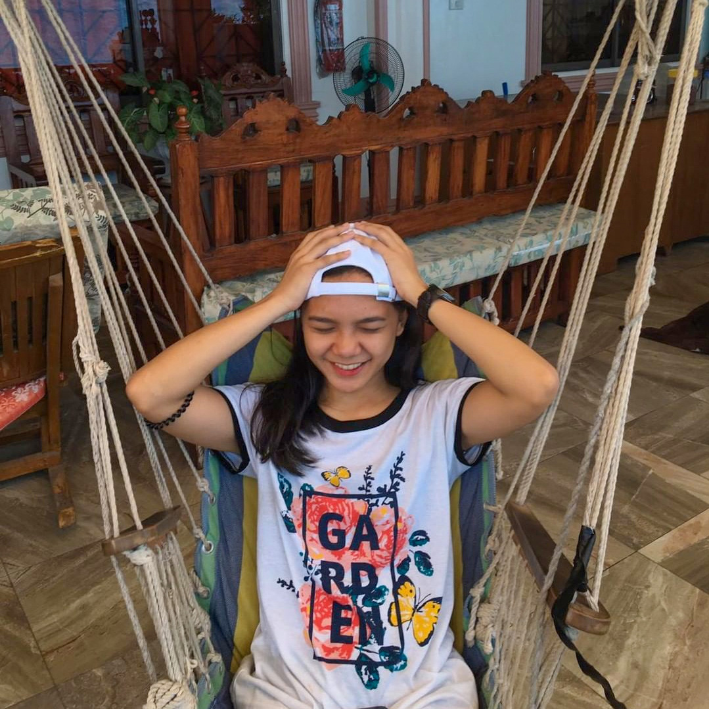
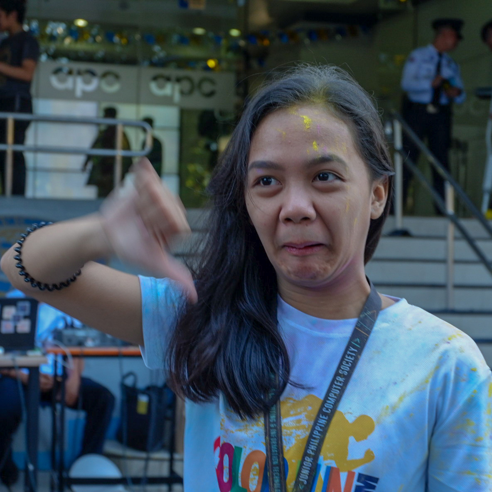

WELCOME
- 
- 

-
"EVERYTHING HAPPENS FOR A REASON"
Music calms me down and relieves my stress. I usually listen to pop rock, electro pop rock, and indie music. This past few years, I attend gigs where I've met my gig buddies which is the 24k club. But lately, I am missing in action because of the schedules and my responsibilities at home. I spent my entire summer on training Muay Thai. At first, engaging to any kind sports helps me to be skinny, but I've learned that I train to be fit not to be skinny. I train insane and train to improve my self defense. At some point, I've also realized, that Muay Thai is not just a combat sport, but it also helps me to bring out the best of me. I've tried different kinds of sports, swimming, taekwondo, arnis, and boxing, but in Muay Thai, it feels like this is where I'm good at. We all know what rejection feels like. It hurts to the bone. But do not dwell on that feeling too much and instead, use it as a motivation to become someone or do something better. I've faced many rejections and only if I act on it, rejection will turn into acceptance or approval.